זיכרון לראשונים
פרופסור גבריאל הרמן, גבי בפי כל, נפטר ב-18 בנובמבר 2024. הוא היה היסטוריון חברתי של יוון העתיקה. בעשורים האחרונים עמדו הדמוקרטיה האתונאית ומערכת הערכים החברתיים שלה במרכז מחקרו. אני כותב דברים אלה כמי שהיה תלמידו ובהמשך – עמיתו בחוג להיסטוריה באוניברסיטה העברית וזכה להיות אתו בקשר אישי. גבי הרמן נולד ב-1947 בטרנסילבניה שברומניה, עלה עם הוריו לארץ כנער ולמד היסטוריה ולמודים קלסיים באוניברסיטה העברית. לאחר סיום לימודי התואר השני (התזה שלו עסקה באימפריה האתונאית במאה החמישית לפני הספירה) הוא פנה ללימודי דוקטורט בקיימברידג'. את עבודת הדוקטור שלו בנושא Ritualized Friendship and the Greek City הוא כתב בהדרכתו של מוזס פינלי וקיבל את תואר דוקטור ב-1985. פינלי היה אחד היסטוריונים החברתיים הבולטים והמפורסמים של העולם היווני-רומי. גבי הרמן לא היה מסתפק בהגדרה זו – הוא תמיד דיבר בהערצה על גדולתו הייחודית של פינלי ובהכרת תודה על מה שקיבל ממנו. הוא תמיד היה גאה להיות תלמידו, למרות שסוג ההיסטוריה החברתית שעסק בה היה שונה מאוד מההיסטוריה החברתית של פינלי, עם הרקע המרקסיסטי שלו. גבי הרמן עסק בהיסטוריה חברתית-תרבותית החוקרת את הערכים ונורמות ההתנהגות השוררים בחברה, את התנאים לצמיחתם ואת השפעתם, מבלי להניח שהממד הכלכלי-מעמדי הוא בהכרח "הבסיס". הוא היה חסיד נלהב של שימוש במגוון של תיאוריות, מודלים ושיטות מחקר ממדעי החברה השונים בחקר ההיסטוריה והרבה ליישם את הגישה הזאת במחקריו.
לאחר הדוקטורט חזר גבי הרמן לארץ ולאוניברסיטה העברית, שם היה למרצה בכיר ב-1990, וב-2010 מונה לפרופסור מן המניין. ספרו הראשון, Ritualized Friendship and the Greek City, המבוסס על הדוקטורט, הופיע בשנת 1987 בהוצאת אוניברסיטת קיימברידג'. ספר זה עוסק בתופעת ה"קסניה" (ξενία): קשר אישי אמיץ של ידידות שנכרת באופן טקסי בין גברים מקהילות פוליטיות שונות בעולם היווני וכלל חילופי מתנות, עזרה הדדית בשעת מצוקה ואירוח הדדי. קשר זה קודש על ידי הנורמות החברתיות ועבר בירושה. ה"קסניה" ידועה מהומרוס, שם אופיה נחשב למשקף את הנורמות של השכבות האריסטוקרטיות של המאה השמינית, אולם היא שרדה ושגשגה גם בעולם הפוליס הקלסית, בממלכות ההלניסטיות ובעולם היווני תחת שלטון האימפריה הרומית. זאת, למרות שנאמנות חוצה-גבולות בין אנשי אליטה שקשר זה היה מבוסס עליה סתרה את הנורמות ששררו בעולם של יחידות פוליטיות מגובשות התובעות נאמנות בלעדית מצד אזרחיהן מכל השכבות ובמיוחד לנוכח הסכסוכים התכופים בין קהילות אלה. אומנם, במקרה של התנגשות ישירה עם הנאמנות לפוליס נסוגה ה"קסניה" לאחור, אבל היה לה כוח רב במצבים פחות חד-משמעיים. היא שיחקה תפקיד חשוב בחיי האליטות היווניות ובטאה היבט תרבותי וחברתי כלל-הלני בעולם המפוצל לערי-מדינה עצמאיות.
בעוד ספרו הראשון עסק בהמשך קיומו של שריד מהתרבות האריסטוקרטית הקדומה בתוך עולם הפוליס ולאחריו, הרי שהספר Morality and Behaviour in Democratic Athens: A Social History, שפורסם בשנת 2006, אף הוא בהוצאת אוניברסיטת קיימברידג', עומד דווקא על עוצמתה יוצאת-הדופן של הפוליס האתונאית בעידן הדמוקרטיה המפותחת ועל יכולתה להחיל את האתוס האזרחי הקולקטיבי שלה על כל האזרחים, לרבות בני השכבות הגבוהות. גבי הרמן עשה בספר זה שימוש מבריק במקור עשיר שהיה מוכר היטב לחוקרים, אך לא נעשה בו עד אז שימוש כזה: מדובר בנאומים המשפטיים האטיים, קורפוס גדול של נאומים שנישאו בבתי המשפט האתונאיים. נאומים אלה פורסים תמונה רחבה של המציאות החברתית באתונה. ספר זה מנתח את הנאומים האלה ומגלה דפוס חוזר לפיו הצדדים המתדיינים בבתי המשפט העממיים של אתונה נהגו לייחס לעצמם מידה מופלגת של התאפקות, נכונות לספוג עלבונות ופגיעות והימנעות מתגובה כוחנית, ואף ויתור על האופציה של הגשת תביעה. לטענתם, רק בלית ברירה ולאחר פגיעות חוזרות ונשנות הם פנו לבסוף לבית המשפט. כל זה נאמר, פעם אחר פעם, בבירור כדי לזכות באהדת השופטים. משום כך ניתן לראות טענות אלה – ללא קשר לשאלה אם הייתה בהן מידה של אמת בכל מקרה ומקרה – כמשקפות את הנורמה החברתית המקובלת כראויה. נורמה זאת עומדת בניגוד קיצוני, לא רק למושגי הכבוד האריסטוקרטי, אלא גם לדימויים הרגילים של גבריות. אתונאים היו מסוגלים להתפאר בהתנהגות שהייתה נחשבת לממיטת השפלה על מי שמודה בה גם בחברות מודרניות מפותחות השואפות לריסון מרבי של האלימות ואוסרות "לקיחת חוק לידיים". הפוליס האתונאית הצליחה אפוא – כפי שמעידים בצורה משכנעת מקורות אלה, וכן שלל העדויות מסוגים שונים שהספר מציג ומנתח – להשליט על אזרחיה במידה יוצאת דופן את הנורמות הקולקטיביות הרצויות לה. אלה כללו לא רק את עליונות החוק המונע מאדם לעשות דין לעצמו, אלא גם ערכים של לכידות אזרחית והעדפת האינטרס הקולקטיבי בפתרון סכסוכים בדרכי שלום כאידאל למענו ראוי, באופן עקרוני, לוותר על אינטרס אישי ואף למחול על כבוד אישי.
החברה האתונאית מצטיירת במחקר זה באופן שונה מאוד מדמותה העולה מתיאורים המייחסים לה "קוד כבוד ים-תיכוני", תוך דגש על גבריות כוחנית ותחרותיות חסרת-מעצורים. הטענות התכופות בדבר "הפניית הלחי השנייה" בנאומים משפטיים נראו בוודאי לחוקים רבים כ-special pleading של בעלי דין; משום כך לא ייחסו להן אמינות וחשיבות. תרומתו הגדולה והמקורית של גבי הרמן היא בעומדו על כך שדווקא הקיצוניות המעוררת-חשד של טענות מעין אלה מוכרחה לשקף נורמה חברתית הנחשבת לראויה ואף להעיד על עוצמתה, שאם לא כן, השמעתן קבל עם ועדה הייתה מעשה של ביזוי עצמי. בחברה "ים תיכונית" במובן הרווח אין זה נהוג להתפאר בפומבי (בצדק או שלא בצדק) בנכונות מופלגת לספוג עלבונות. זהו אפוא היבט חשוב בתמונה הכללית. יורשה לי לומר שהמשפט הכולל של גבי הרמן על אתונה הדמוקרטית משקף גם את אהבתו הגדולה לאתונה, ויותר מכך – את אמונתו בדמוקרטיה, ולא רק זו האתונאית. הוא עסק רבות בתיאוריות מודרניות של "חוכמת ההמונים" המציעות בסיס רציונלי, המגובה בממצאים של מחקרי התנהגות, להעמדת עניינים חשובים להכרעה הרבים. ניכר היה שהוא שמח למצוא בסיס מחקרי-אמפירי לאמונתו בדמוקרטיה (מבלי להשלות את עצמו שההיגיון של "חוכמת ההמונים" חל בכל המקרים). אבל ביסודו של דבר הייתה זו אכן אמונה, חלק מאמונתו היסודית באדם ובפוטנציאל התבוני והמוסרי שבו, אולי ברוח משל פרוטגורס. באופן טרום-פוסט-מודרני בעליל, הוא מצא באתונה הקלסית ובתרבות היונית העתיקה, ובאופן רחב יותר, במיטב התרבות המערבית, גילויים מופלאים של מימוש פוטנציאל זה.
חוששני שגבי לא היה מרוצה מהשערה זו בדבר הקשר בין אהבתו לאתונה ואמונתו בדמוקרטיה לבין כתיבתו המחקרית, שהרי לא היה דבר שקומם אותו יותר מאשר ההיתר הפוסט-מודרני, בפרשנותו הנפוצה, להניח לסדר יום אידאולוגי לחלחל – ולעתים אף לפלוש בגלוי – לתוך ממצאיו של מחקר אקדמי. טוהר המתודולוגיה היה בשבילו עניין שבקדושה. תזה מחקרית לכאורה, הפוטרת את עצמה מהצורך בביסוס קפדני מתוך יומרה לשקף ולשרת דבר-מה שראוי להאמין בו, עוררה אצלו בוז גמור. באהבתו הגדולה לאתונה, ובבקיאותו המופלאה בתולדותיה, במורשתה הספרותית ובתרבותה החומרית, יכולתי להיווכח גם בעת סיורים, יחד אתו ובהדרכתו, בהם זכיתי להשתתף. בסיורים אלה, כמו בהזדמנויות רבות אחרות, זכיתי להכיר אותו כאדם שהיה מופת של ידידות וטוב לב, כשם שהיה חוקר היסטוריה משובח.
Professor Gabriel (Gabi) Herman who passed away on November 18, 2024, was a social historian of ancient Greece. Athenian democracy and its societal values have been at the center of his research. I am writing this as someone who was his student and later his colleague in the Department of History at the Hebrew University, and had the privilege of having been personally connected to him. Gabi Herman was born in 1947 in Transylvania, Romania, and immigrated to Israel with his parents as a teenager. He wrote his PhD dissertation on "Ritualized Friendship and the Greek City" under the supervision of Moses Finley and received his PhD in 1985. Gabi Herman’s social history was socio-cultural, one that studies the values and norms of behavior that prevail in a society, the conditions for their growth, and their social impact.
His first book, Ritualized Friendship and the Greek City, based on his PhD dissertation, was published by the Cambridge University Press in 1987. It deals with the phenomenon of "xenia" – ξενία – in the Greek world: a strong personal bond that was ceremonially forged between men from different political communities, which included the exchange of gifts, mutual help in times of need, and mutual hospitality His second book, Morality and Behaviour in Democratic Athens: A Social History (1987, Cambridge University Press), examines the impressive ability of the Athenian polis in the age of developed democracy to impose its collective civic ethos on all citizens, including the upper classes. The book taps a rich source that had not been used in this way until then: the forensic speeches of Attic Orators, a large corpus of speeches delivered in Athenian courts. It demonstrates a recurring pattern: litigants in Athenian popular courts attributed to themselves an extraordinary degree of restraint and a willingness to endure multiple insults and injuries without resorting to force, or even filing a lawsuit. It was only as a last resort, after repeated abuses, that they finally decided to prosecute the offender. Such claims were made repeatedly, clearly in the hope wining the jurors’ the sympathy; they must have reflected, whatever the truth of the matter in each case, a prevailing notion of proper social behavior.
The Athenian society that emerges from this study is very different from descriptions that attribute to it a "Mediterranean code of honor," with its aggressive masculinity and unbridled competition. I dare say that Gabi Herman's general verdict on the Athenian democracy also reflects his great love for Athens, and his belief in democracy, not just Athenian. He dealt extensively with modern theories on the "wisdom of the crowd” that offer a rational basis, backed by the findings of behavioral studies, for relying, in important decisions, on the collective wisdom of “the many”. He was evidently happy to find a basis in empirical research for his belief in democracy - without deluding himself that the logic of the wisdom of the crowd applies in all cases. But in essence, this was for him a matter of faith - part of his deep belief in the Human’s intrinsic value and intellectual and moral potential, perhaps in the spirit of Protagoras.
I am afraid that he would not have been happy with this hypothesis, that there was a connection between his love for Athens and his belief in democracy and his research. Nothing infuriated him more than the post-modern (in the common, and certainly his, understanding) readiness, and indeed eagerness, to allow an ideological agenda to contaminate (as he would define it) the findings of academic research. A scholarly thesis that exempted itself from the need for a rigorous substantiation by claiming to reflect some higher truth and serve some noble goal aroused in him utter contempt. His love for Athens, his remarkable mastery of its history, its literary heritage and its material culture - all these I could observe personally during Athenian tours, together with him and under his guidance, in which I had the privilege of participating. During these tours, as on many other occasions, I had the privilege of knowing him as a man who was as exemplary in friendship and kindness as he was an admirable scholar and a fine first-class historian.
 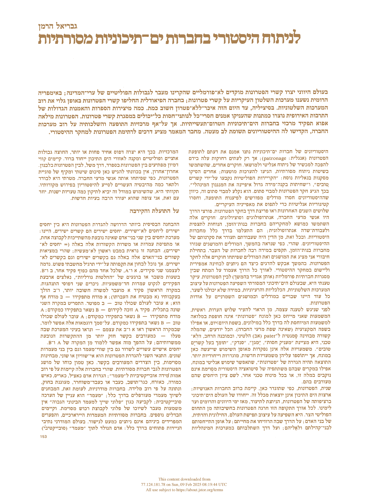
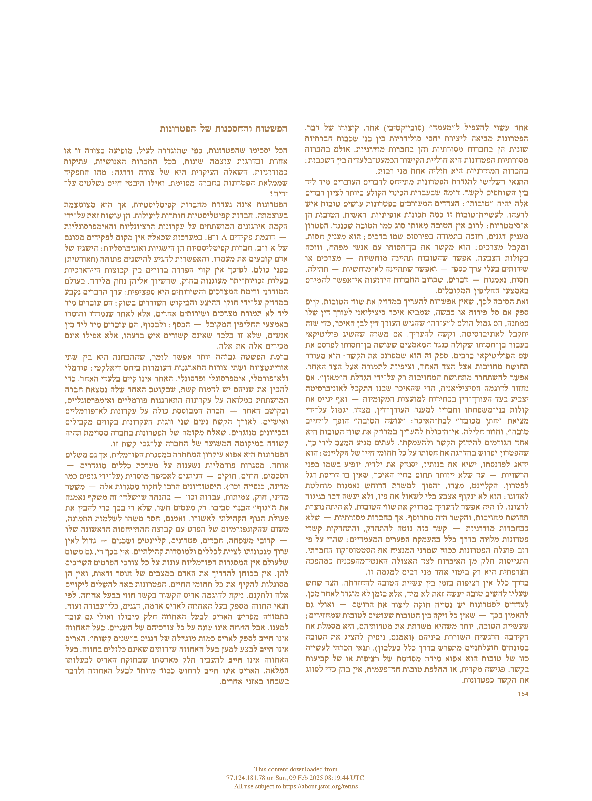
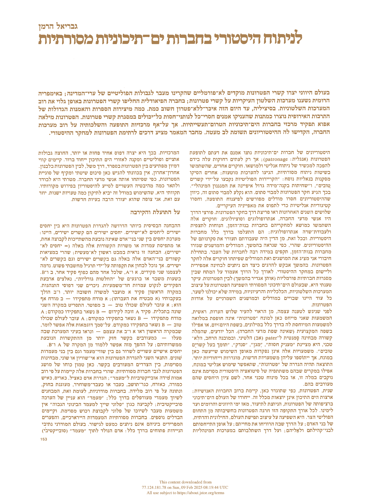
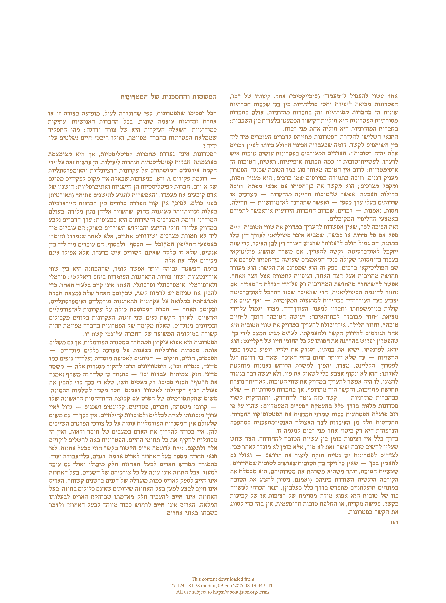

 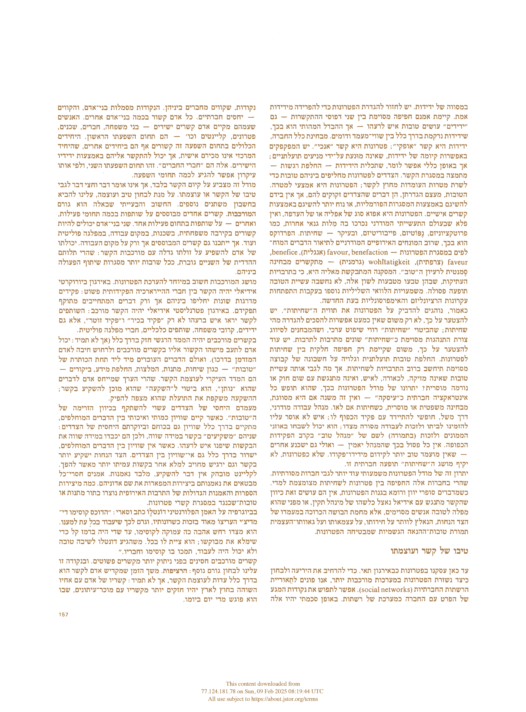
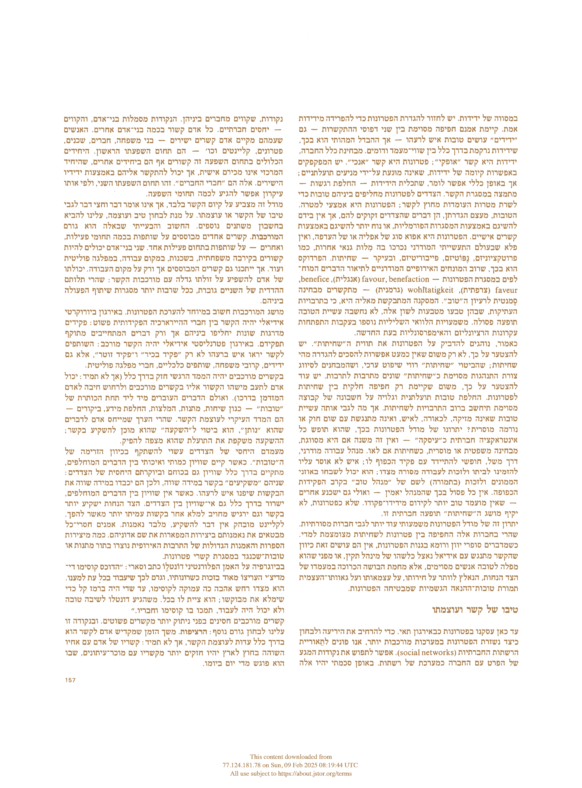
 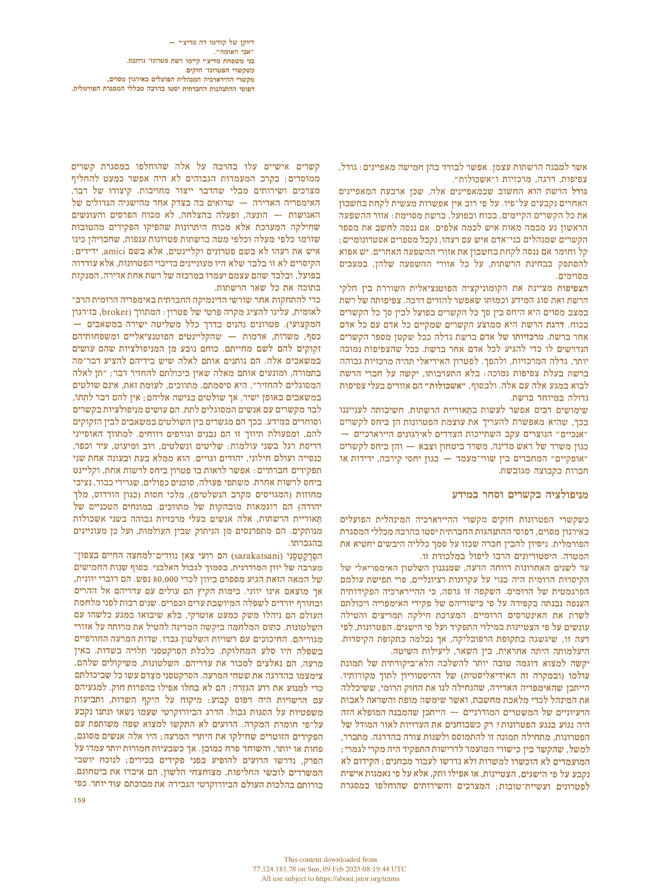
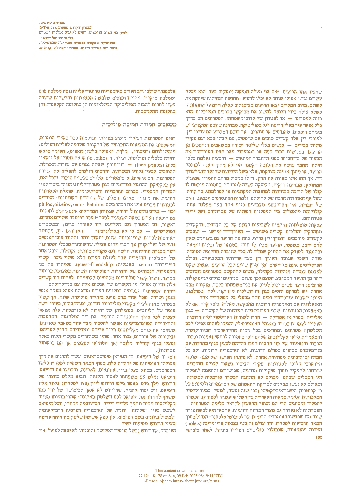
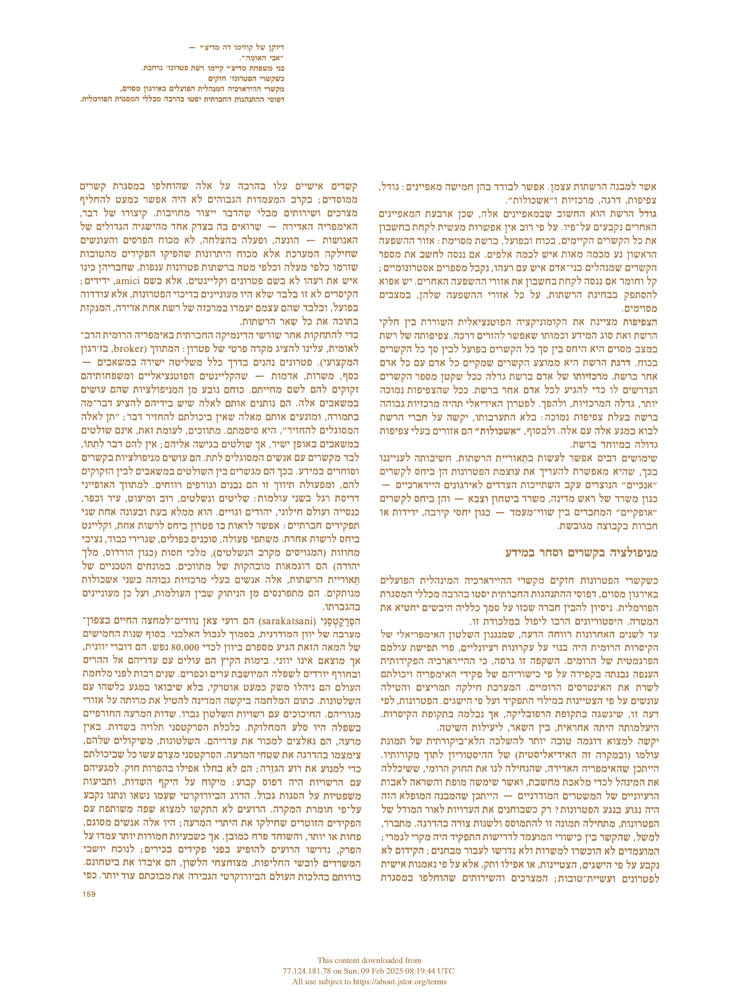
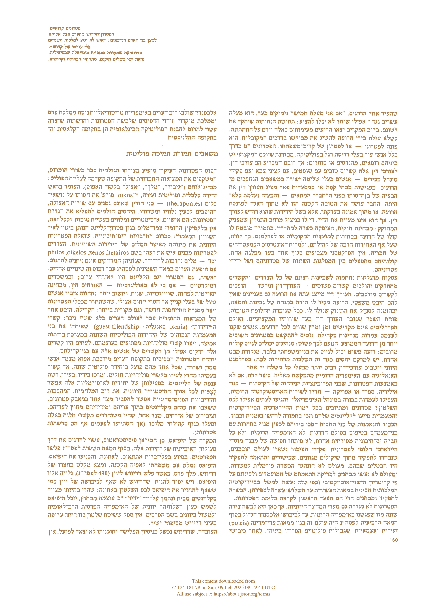


 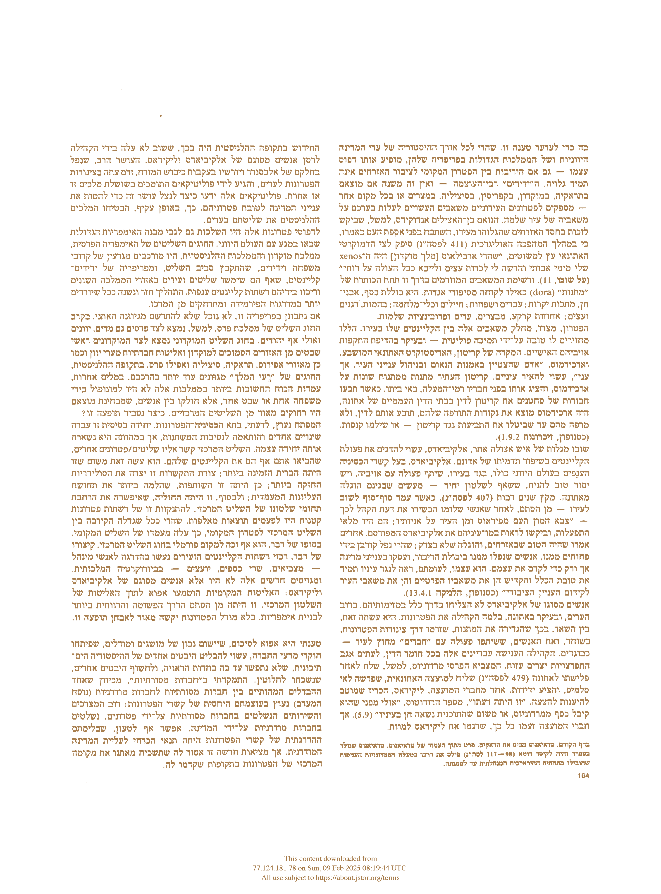
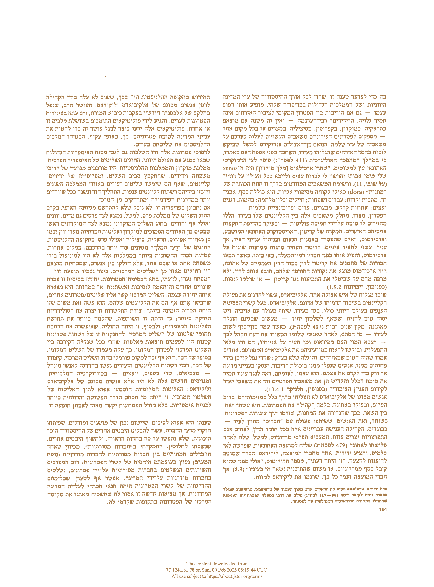